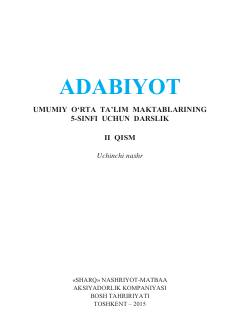

A55-sinf o'quvchilari uchun mo'ljallangan adabiyot darsligining ikkinchi qismi.
Mazkur darslik umumiy o'rta ta'lim maktablarining 5-sinfi uchun mo'ljallangan bo'lib, o'zbek va jahon adabiyotining sara namunalarini o'z ichiga oladi. Kitobning ushbu ikkinchi qismida Oybekning ' Fanorchi ota' hikoyasi va boshqa badiiy asarlar, ularning tahlili hamda o'quvchilar uchun savol-topshiriqlar berilgan.